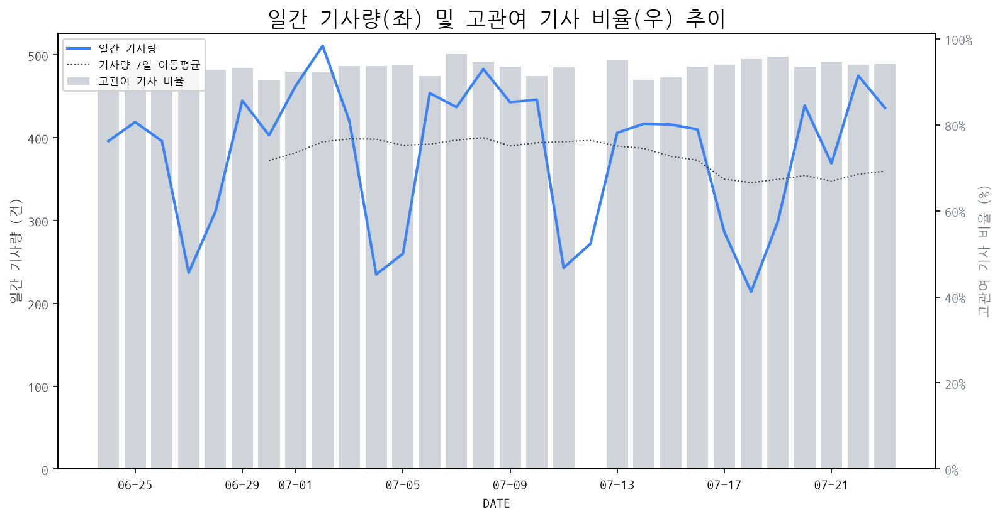

1
시장 활동 지표
기사량 추세 & 이상 징후 탐지
시장의 '전체 기사량'이 평소보다 비정상적으로 급증했는지(Spike)를 차트로 확인하고, LLM이 분석한 급등의 핵심 원인을 파악할 수 있음

고관여 기사란? 산업 연관 키워드로 수집된 기사들 중 디스플레이 키워드에 가중치를 반영하여 도출된 관련성 높은 기사
수집된 기사 수 (2026-07-23)
436
+6% WoW
기사량 변동 수준 (7일 이동평균 대비)
±6.7% 이하
2
오늘의 키워드
급격한 관심 ↑, 주목해야 할 키워드
1
알파벳
+1.5σ
알파벳의 실적 발표와 AI 투자 관련 시장의 관심 고조로 키워드 급증
Related Metrics
금일 언급량: 5, 전일 대비: +2
Interpretation
AI 관련 수요 증가 기대
Next Step
'알파벳' 관련 상세 기사 및 경쟁사 반응 모니터링
3
실시간 Risk 키워드
경계해야 할 시그널 탐지
특정 토픽의 부정 감성 점수가 급등할 때 이를 즉시 탐지하고, "근거 기사" 링크를 통해 리스크의 실체를 빠르게 파악할 수 있음
키워드 분석 결과, 오늘은 걱정할 만한 하락 신호가 없습니다. (부정 언급량 변화: +1.5σ 이내)
4
주요 이벤트 모니터링
실시간 산업 동향 파악을 위한 주요 활동
최근 발생한 주요 기업들의 신제품 출시, 투자 등 주요 이벤트를 제공하여 매일 경쟁사 동향을 확인할 수 있음
삼성디스플레이와 LG디스플레이가 최신 OLED 기술을 한자리에서 선보이는 행사를 개최했습니다. 이번 행사에서 양사는 각자의 혁신적인 기술력을 과시하며 디스플레이 시장의 미래를 제시했습니다.
Impact
이번 신기술 공개는 OLED 디스플레이의 기술 고도화를 촉진하고, 경쟁사들의 기술 개발 및 시장 전략에 영향을 미칠 것으로 예상됩니다.
Next Step
경쟁사의 신기술 동향을 면밀히 파악하고, 자사의 차별화된 기술 개발 및 마케팅 전략을 강화해야 합니다.
삼성전자가 새로운 갤럭시 폴더블폰에 10:9와 4:3의 두 가지 화면비를 도입하며 폴더블폰 대중화를 추진합니다. 이는 사용자 경험 개선 및 다양한 활용성을 제공하려는 전략입니다.
Impact
다양한 화면비 지원은 폴더블 디스플레이 패널 설계 및 생산 공정의 유연성 확보와 함께, 콘텐츠 소비 및 생산 측면에서 새로운 시장 수요를 창출할 잠재력을 가집니다.
Next Step
다양한 화면비에 최적화된 폴더블 디스플레이 기술 개발 및 생산 능력 확보를 위한 선제적 투자를 고려해야 합니다.
AR 글라스 핵심 부품인 '엘코스(ELCOS)' 기술을 보유한 라온텍이 2030년까지 연 1억 개 생산을 목표로 총력을 기울이고 있습니다. 이는 AR 글라스 상용화를 위한 부품 생산 능력 확대에 대한 의지를 보여줍니다.
Impact
라온텍의 대규모 생산 목표는 AR 글라스의 상용화 속도를 가속화하고, 관련 디스플레이 부품 시장의 성장을 촉진할 것으로 예상됩니다.
Next Step
AR 글라스용 디스플레이 부품 제조 기업은 라온텍의 엘코스 기술 채택 추세와 생산 능력 확대에 발맞춰 자체적인 AR 글라스 디스플레이 기술 개발 및 생산 능력 확보를 고려해야 합니다.
한화오션이 AI 기술을 적용하여 협력사의 생산성을 크게 향상시켰다는 소식입니다. 이는 AI 기술이 제조업 전반의 효율성을 높일 수 있음을 보여줍니다.
Impact
본 이벤트는 AI 기술 도입이 디스플레이 제조 공정 및 협력망 효율화에도 긍정적인 영향을 미칠 수 있다는 점을 시사하며, 관련 기술 투자 및 도입 경쟁을 촉발할 수 있습니다.
Next Step
디스플레이 제조 기업은 AI 기술이 생산 및 공급망 관리에 미칠 수 있는 잠재력을 평가하고, 자체 기술 역량 강화 및 협력사와의 AI 솔루션 공동 개발을 모색해야 합니다.
AI 기술 발전에 따른 국제 안보 환경 변화에 대한 한국의 대응 전략을 모색하는 CERT 이벤트가 개최되었습니다. 이 이벤트는 AI와 안보 간의 연관성을 심층적으로 다룰 예정입니다.
Impact
AI 기술의 안보적 중요성 부각은 고성능, 보안 강화 디스플레이 수요 증가 및 관련 기술 개발 경쟁 심화를 가져올 수 있습니다.
Next Step
국방, 보안 등 특수 분야에 특화된 고강도, 고신뢰성 디스플레이 솔루션 개발 및 관련 기술 투자를 강화해야 합니다.